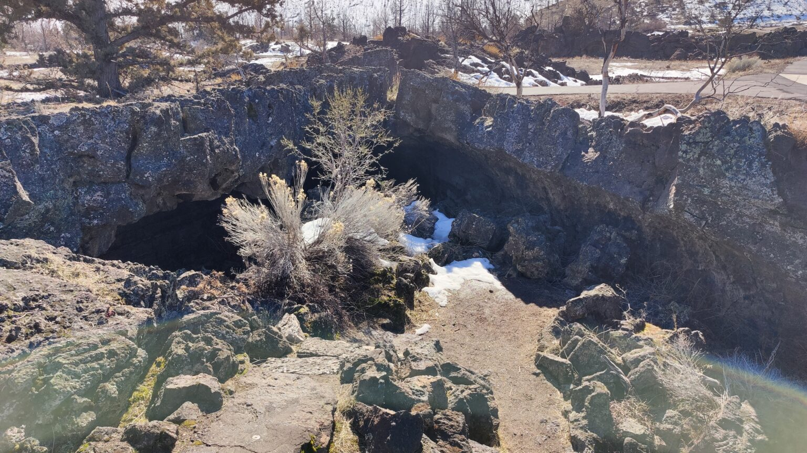
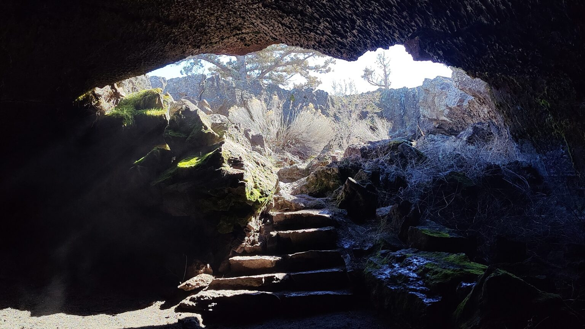

The quick version
Valentine is a classic low-velocity lava tube — a place where pāhoehoe lava once flowed, then crusted over, then drained out under the crust and left a ceiling behind. Walk in through the staircase, follow the tube for roughly 1,600 feet round-trip, turn around when the floor gets sketchy, walk back to daylight.
It's not a technical cave. It's a good example of a tube you shouldn't skip at Lava Beds and a very good first cave if you've never carried a headlamp into the dark before.

How we ran it
Start at the visitor center
Before you go underground at Lava Beds — any cave — stop at the visitor center. Rangers check whether you've been in another cave system in the last decade and screen your gear for White-Nose Syndrome risk to the resident bats. They'll also hand you a loaner headlamp if you need one and brief you on current closures.
Valentine is usually open. Call ahead or check the NPS page if you're making a day trip of it.
Drive the loop
From the visitor center, drive the Cave Loop Road until you see the Valentine Cave pullout on the right. Parking is small — maybe four or five cars — but turnover is high. The tube is down a short, paved path and a set of stone steps that feel cold against your palms even on a summer afternoon.
Light discipline inside
Bring two light sources. A headlamp and a handheld or a phone light are enough for this cave. The tube is wide and tall at the entrance, narrowing as it goes. The floor is uneven basalt — not sharp, but it wants ankle attention, and there are places where the ceiling drops. Helmets aren't required, but the NPS isn't going to argue if you wear one.

What you're actually looking at
Two things make Valentine worth the trip. First: the ceiling is covered in lavacicles — droplets of still-molten lava that froze mid-drip when the tube cooled. They're small, fragile, and not to be touched. The second is a shelf about 200 feet in that marks an old high-flow line, the stone equivalent of a high-tide mark on a rock wall.
Further in, the air turns noticeably colder — lava tubes hold temperature like a cellar — and the light disappears. Stop, turn off your headlamp for 30 seconds, and let your eyes fail to adjust. That's the point of the trip.
Combine it with
- The broader Lava Beds trip — history, Mushpot Cave, and the Petroglyph Section.
- Skull Cave, also off the Cave Loop — shorter, taller, with ice.
- Schonchin Butte lookout — 15-minute uphill hike with the best overview of the whole monument.
Resources
- National Park Service — Lava Beds National Monument: Valentine Cave
- USGS — Volcanoes of the Medicine Lake Volcanic Field
- National Speleological Society — responsible caving guidelines